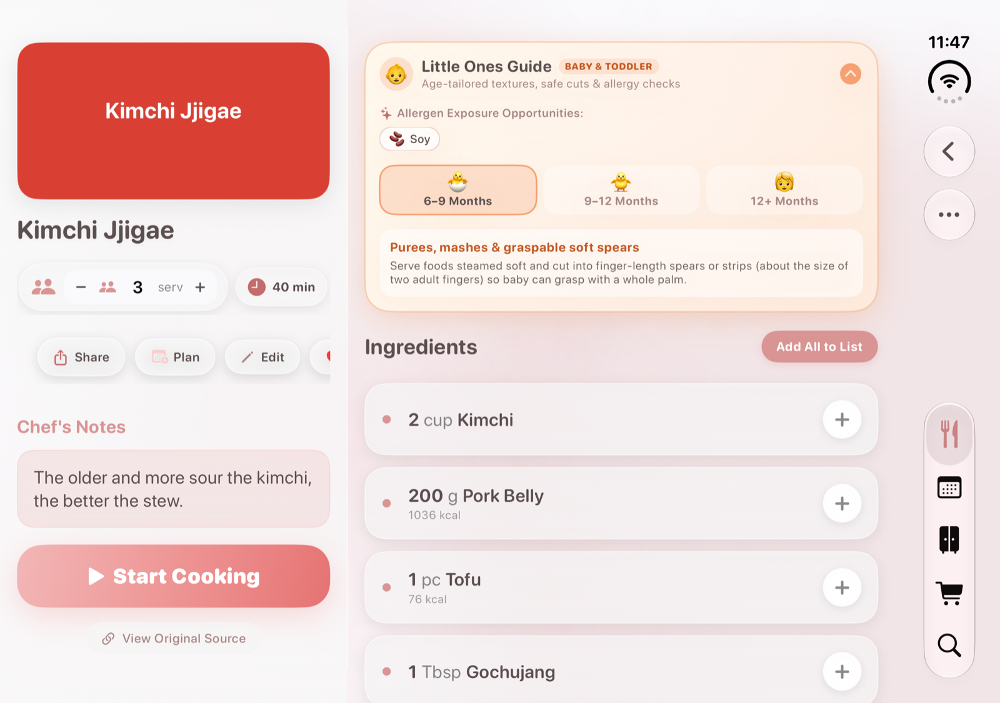
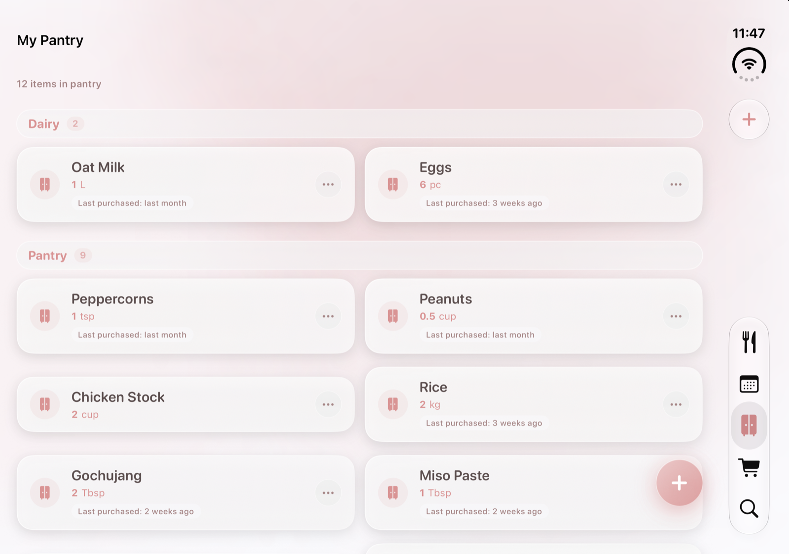

Recipe Mini
Personal Cookbook, Weekly Meal Planner, Smart Pantry & Grocery Assistant


Cook Smarter, Zero Ad Clutter
A calm, structured kitchen companion for collecting recipes, planning family meals, and reducing food waste.
Recipe Collection
Import recipes from cooking websites cleanly without popups or ads, scale servings instantly, and organize by cuisine.
Meal Planner & Pantry
Schedule breakfast, lunch, and dinner across your week while keeping track of fridge and pantry staples.
Aisle-Sorted Groceries
Automatically compile grocery lists directly from your weekly meal calendar, neatly grouped by store category.
Distraction-Free Kitchen Display
Keep your screen awake while cooking with side-by-side ingredients and step-by-step preparation instructions—optimized for both portrait and spacious dual-pane layouts.


Smart Pantry & Family Nutrition
Track pantry inventory to prevent duplicate purchases, and optionally log first foods and allergen notes for growing families.
Frequently Asked Questions
Does it import recipes from websites?
Yes. Recipe Mini extracts ingredients and instructions cleanly from popular recipe sites without clutter.
Can I scale serving sizes?
Yes. Adjust the serving count anytime and Recipe Mini automatically recalculates every ingredient quantity.
Is there a hands-free cooking mode?
Yes. Step-by-Step mode keeps your display awake and highlights one instruction at a time while you cook.